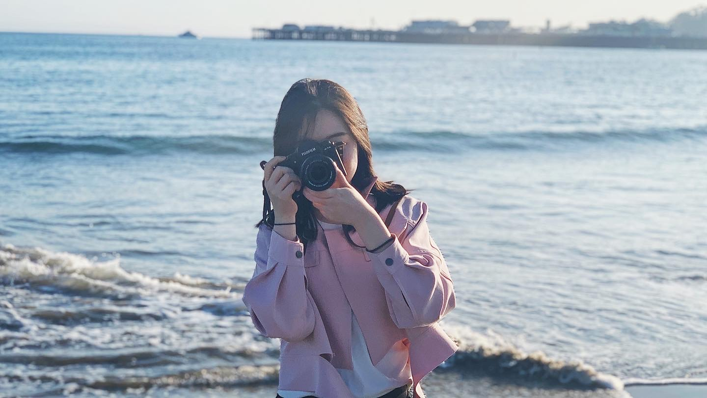
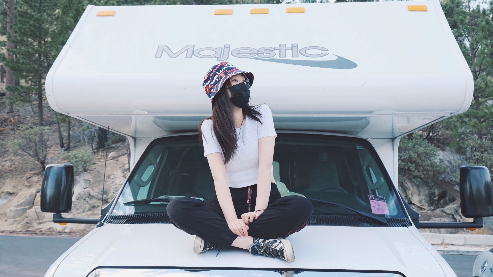

I record light, stories, and colors.
I am a casual photographer and videographer with Fuji XT4 and Dji mini2. When I started to get serious about photography and videography? To be honest, It's after pandemic starts. I started to pay more attention to myself and aware that there were so many things happening on me and people around me. I just want to record all things I have been through and people I spent time with.
 